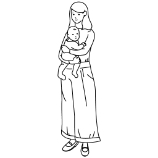

PORTEARTHスイミーとは
What's "PORTEARTHswimmy"
PORTEARTHスイミーは、
個人のプロフェッショナルの集団。
PORTEARTHがまとめ役黒い魚になり、各専門家と契約を行いネットワークしています。
- 


メーカーにとってのベネフィット
Benefits for manufacturers
PORTEARTHスイミーは個人のプロフェッショナルの集団だから、
会社のニーズ、やり方に合わせて
柔軟な、御社だけの専属チームを作ることが出来ます。
メーカー
御社と
二人三脚で
伴走します
PORTEARTHスイミー
御社専属サービス
(専属サービス)
例えば、イラスト一枚からの依頼でもOK。
どんな小さなご依頼にも、専属チームが伴走します。
気軽にお声がけください！


プロジェクト
マネージャー

補助金
作成チーム
そんなあなたには
補助金申請チーム
新規事業に関わる助成金を申請するために、 中小企業診断士など補助金作成の専門家から なるチームが一丸となって支援します。 補助金作成チームとは中小企業診断士など補助金作成の専門家からなるチームです。

プロジェクト
マネージャー

クリエイティブ
チーム

広報
チーム
そんなあなたには
クラウドファンディングチーム
クラウドファンディング支援を使ってクラウドファンディング 専門家とともにプロジェクトを行います。 クリエイティブチームとはwebページ作成、画像作成、動画作成などを 担当する専属チームの略称です。


プロジェクト
マネージャー
各サービス
各サービス
各サービス

伴走エージェント
そんなあなたには
PORTEARTHサービス
PORTEARTHサービスを導入してメーカー専属の販売拡大支援チームを作り、 国内のAmazonからアメリカAmazonや全世界のecモールに出店も可能です。 各サービスとは、「補助金代行」「システム開発」「自社サイト構築」 「Amazon販売代行」などを指します。
メーカーが自社販売を始める時の課題
Challenges at the time of Sale
「誰に頼んだら良いか分からない」という課題。
選択肢が多すぎる
さまざまなプラットフォームがあり、
どこを頼るべきかの専門的な知見がないため決められない。
何から始めたら良いかわからない
自社に専門的な知識のある人材がいないため、
手順や何から始めるべきかの判断が出来ず、決められない。

PORTEARTHスイミーとの比較
Comparison
本当に信頼できるチームなの？
フリーランサーに頼まなくても、個人事業委託や会社組織との契約という選択もあります。
その中で、PORTEARTHスイミーじゃないといけない理由について、7つの比較項目を例にお話しさせてください。
企業に合ったメンバーを
PORTEARTHが選定するので
相性の良し悪しを心配しなくてよい
相性の良し悪しを
判断する材料がない。
また、個人により大きくばらつきがある。
PORTEARTHスイミーなら、
企業と相性のいいメンバーを
すぐに見つけることができる
突然やめてしまう場合があり、
企業はまた一から人員手配を
すすめなくてはならない。
PORTEARTHスイミーなら、
一気通貫でプロジェクトを行うこと
ができる
新しいプロジェクトに対応できない
新しいことをするなら
また別の人材を探す必要がある
PORTEARTHスイミーなら
メーカーの規模やスピード、
方向性に合わせた
柔軟な支援が可能
企業の都合の良いやり方で行うため
メーカーのやりたい方向に対応できない。
企業が持つ型（やり方、戦略）に
メーカーが合わせざるを得ない
PORTEARTHスイミーなら、
連絡手段は基本chatで、24時間だ
れかが対応してくれる。
規模によって図体が大きくなってしまい
変化の激しい世界に対応できない。
連絡手段はメールや電話で、
やり取りできる時間が決まってる。
PORTEARTHスイミーなら
PORTEARTHのノウハウに加えて、
各専門家が持ってるノウハウも
合わせて提供できる
社員を雇うため
自社のノウハウだけでしか
仕事ができない
PORTEARTHスイミーなら
企業のニーズに合わせたチームの
形がとれるために予算も柔軟
自社を運営するために
コストが高くなる
| PORTEARTHスイミー | 個人業務委託 | 会社組織 | |
|---|---|---|---|
| 案件適正 | ○ | ✕ | ○ |
| 安定性 | ○ | ✕ | ○ |
| 汎用性 | ○ | ✕ | ✕ |
| 柔軟性 | ○ | △ | ✕ |
| 対応スピード | ○ | △ | ✕ |
| 人材の豊富さ | ○ | △ | ✕ |
| 価格 | ○ | △ | ✕ |
△...個人は個人の資質によって大きくブレがあるため比較が難しい。
PORTEARTHスイミーは
日本中から選りすぐりのメンバーを集めたプロフェッショナル集団。
チームジャパンで一丸となって
世界と戦っていこう！
企業実績紹介
Works
株式会社呉竹 様
プロフィール
書道関係や、筆ペンなどの筆記用具を製造する、来年120年を迎える奈良のメーカーです。
PORTEARTHと出会ったきっかけは？
立石さん:弊社の商品を販売したいというところで、始めは得意先として関係がスタートしました。
PORTEARTHを選んだ決め手は何ですか？
立石さん:メーカーの立ち位置を理解してもらえることと、販売者としての知見が優れていた為です。
国際部マネージャー
立石 翔さん
立石翔さんのプロフィールはこちら
close
株式会社DESIGHN SETTA SANGO 様
プロフィール
2009年ぬ奈良県三郷町で夫婦2人でカフェをはじめ、その後三郷町の地場産業である草履の職人である芝崎夫婦と出会い、
「カフェに来店する女性にオシャレに日常履きできるセッタ」をテーマにしたDESIGN SETTA
SANGOを2013年よりイベントからスタート。
2015年法人化し、セッタブランドとして本格始動。ブランドコンセプトは「セッタを世界のスタンダードに」
PORTEARTHと出会ったきっかけは？
星田さん:ミラノデザインウィークに出展した際に出会ったFedExの担当の方からご紹介いただきました。
PORTEARTHを選んだ決めては何ですか？
星田さん: まずは信用です。
実際に私どものブランドコンセプトを理解頂いて、適切な販売展開をして頂けるということがイメージできました。
他企業からもこのようなお話をたくさん頂きますが、私どもは海外販売に対してのパートナーとしてブランドイメージを大事にしていただけるかどうかポイントです。
代表取締役
星田 和彦さん
星田和彦さんのプロフィールはこちら
close
Collaboration
企業同士を引き合わせて、新しい風を吹かすことができるのもPORTEARTHスイミーの特徴のひとつ！
PORTEARTHスイミーは専門家集団ですが、一緒に伴走した企業さんもPORTEARTHスイミーの一員になってもらうことができます。そうすることで、PORTEARTH スイミーが橋渡しとなる出逢う事のなかった企業同士のコラボレーションが実現するのです！
共有するきっかけがないと
実現しなかった
出会いでした。
立石さん: このコラボレーションに刺激を受けております。具体的に、地域の伝統産業を ビジネス化し、成功されている方と直接お会いしたり、情報交換などを行えるところが嬉しいですね。

星田さん: PORTEARTHさんのコンセプトは、奈良の伝統性をフューチャーしていくことですよね。我々も同じです。 そこがぶれていると、今回のコラボレーションも実現しませんでした。 「海外で売りたいから」ではなく、PORTEARTHさん、企業2社ともにコンセプトで繋がっていることが大切でした。 そういった繋がりを見つけられたのが、このコラボレーションを実現しました。
立石さん: こうしていろいろな方とつながりを持って、ビジネスを発展させていきたいと思います。
星田さん: メーカーは海外展開をしたいと思っているけど、中小企業はやろうと思ってもやり方が分からない。 その為にピンポイントで人員を採用してもリスクが高いので出来ないことが多いのです。結局楽天やAmazonで出品、ただ、そうすると自分たちのブランドが伝わりにくくなります。 PORTEARTHは会社、組織で動いているわけでなくピンポイントで人員をみつけてこれるので合理的だと思いました。 そういうことを望む企業とPORTEARTHはとても相性がいいと感じます。
同じ志を持つ企業さんと
直接情報交換が行えるところが
刺激的です。
一緒に伴走した企業さんも
PORTEARTHスイミーの一員です。
よくある質問
Q and A
ここに質問が入ります。ここに質問が入ります。
仕事には失敗やミスが前提であることを。PORTEARTHスイミー全員が強く意識していることです。
やはり、何かに取り組むときに誰しもが多少なりとも失敗を恐れると思います。私もそうです。
特に「ディレクション業務」は未経験も同然の分野で、自分に務まるのか？企業様に迷惑をかけてしまわないか？
など未知の領域であるが故の不安でいっぱいでした。しかし私たちは、自分の得意な能力を、どうやったら活かせるか
という試行錯誤に力を注いでいます。その力は、不安を遥かに超えるエネルギーです。
「失敗してもすぐに正しい道に修正すればよい」「常にトライ&エラー」という言葉がピッタリの働き方が出来ることが、
PORTEARTHスイミーと出会ってよかったなあという事です。
この他にも、現在進行形で良い点や改善点を感じていますが、また別の機会にお話しさせてください。
ここに質問が入ります。ここに質問が入ります。
仕事には失敗やミスが前提であることを。PORTEARTHスイミー全員が強く意識していることです。
やはり、何かに取り組むときに誰しもが多少なりとも失敗を恐れると思います。私もそうです。
特に「ディレクション業務」は未経験も同然の分野で、自分に務まるのか？企業様に迷惑をかけてしまわないか？
など未知の領域であるが故の不安でいっぱいでした。しかし私たちは、自分の得意な能力を、どうやったら活かせるか
という試行錯誤に力を注いでいます。その力は、不安を遥かに超えるエネルギーです。
「失敗してもすぐに正しい道に修正すればよい」「常にトライ&エラー」という言葉がピッタリの働き方が出来ることが、
PORTEARTHスイミーと出会ってよかったなあという事です。
この他にも、現在進行形で良い点や改善点を感じていますが、また別の機会にお話しさせてください。
ここに質問が入ります。ここに質問が入ります。
仕事には失敗やミスが前提であることを。PORTEARTHスイミー全員が強く意識していることです。
やはり、何かに取り組むときに誰しもが多少なりとも失敗を恐れると思います。私もそうです。
特に「ディレクション業務」は未経験も同然の分野で、自分に務まるのか？企業様に迷惑をかけてしまわないか？
など未知の領域であるが故の不安でいっぱいでした。しかし私たちは、自分の得意な能力を、どうやったら活かせるか
という試行錯誤に力を注いでいます。その力は、不安を遥かに超えるエネルギーです。
「失敗してもすぐに正しい道に修正すればよい」「常にトライ&エラー」という言葉がピッタリの働き方が出来ることが、
PORTEARTHスイミーと出会ってよかったなあという事です。
この他にも、現在進行形で良い点や改善点を感じていますが、また別の機会にお話しさせてください。
ここに質問が入ります。ここに質問が入ります。
仕事には失敗やミスが前提であることを。PORTEARTHスイミー全員が強く意識していることです。
やはり、何かに取り組むときに誰しもが多少なりとも失敗を恐れると思います。私もそうです。
特に「ディレクション業務」は未経験も同然の分野で、自分に務まるのか？企業様に迷惑をかけてしまわないか？
など未知の領域であるが故の不安でいっぱいでした。しかし私たちは、自分の得意な能力を、どうやったら活かせるか
という試行錯誤に力を注いでいます。その力は、不安を遥かに超えるエネルギーです。
「失敗してもすぐに正しい道に修正すればよい」「常にトライ&エラー」という言葉がピッタリの働き方が出来ることが、
PORTEARTHスイミーと出会ってよかったなあという事です。
この他にも、現在進行形で良い点や改善点を感じていますが、また別の機会にお話しさせてください。
ここに質問が入ります。ここに質問が入ります。
仕事には失敗やミスが前提であることを。PORTEARTHスイミー全員が強く意識していることです。
やはり、何かに取り組むときに誰しもが多少なりとも失敗を恐れると思います。私もそうです。
特に「ディレクション業務」は未経験も同然の分野で、自分に務まるのか？企業様に迷惑をかけてしまわないか？
など未知の領域であるが故の不安でいっぱいでした。しかし私たちは、自分の得意な能力を、どうやったら活かせるか
という試行錯誤に力を注いでいます。その力は、不安を遥かに超えるエネルギーです。
「失敗してもすぐに正しい道に修正すればよい」「常にトライ&エラー」という言葉がピッタリの働き方が出来ることが、
PORTEARTHスイミーと出会ってよかったなあという事です。
この他にも、現在進行形で良い点や改善点を感じていますが、また別の機会にお話しさせてください。